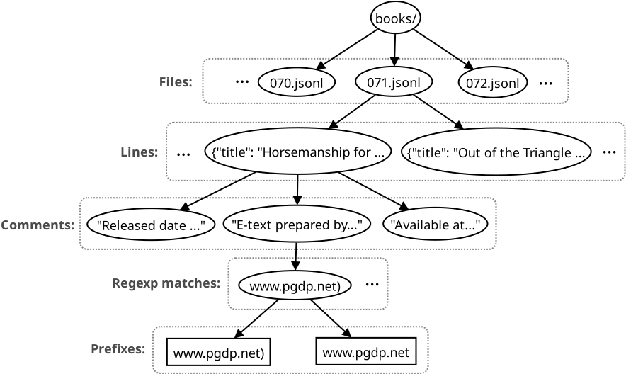
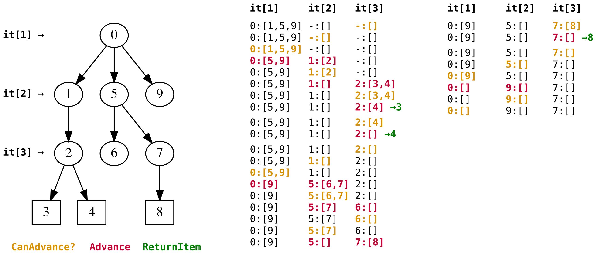
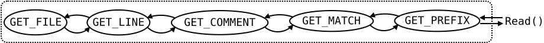
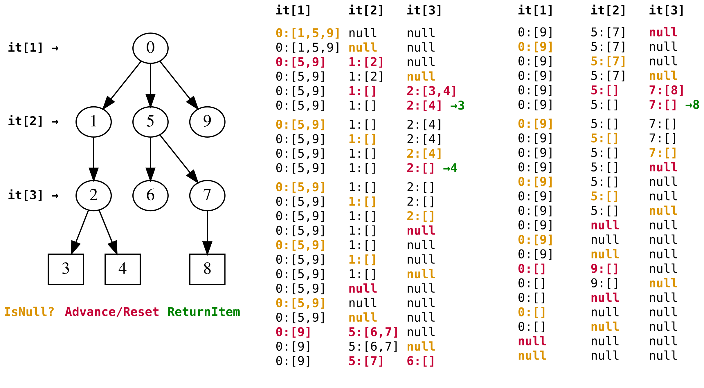

Andrei Gudkov <gudokk@gmail.com>
Consider a common coding problem. You have a complex hierarchy of objects and you want to iterate over all the objects located at the bottom-most level. The question is: how can we design an iterator that will be easy to code and that will be free of silly mistakes like missing some objects or entering into infinite loops?
Let’s use the following specific example for demonstration. We would like to extract all URLs found across Project Gutenberg (PG) metadata. Among these URLs there are links to Wikipedia, to PG itself, to a variety of specialized libraries, and so on. Our input is the directory populated with preprocessed jsonl files, up to 1000 lines per file. Each line is a JSON object describing a single PG entry, like this:
{
"author": "Mead, Theodore H. (Theodore Hoe), 1837-",
"title": "Horsemanship for Women",
"subjects": ["Horsemanship"],
"comments": [
"Release date is 2013-06-13",
"E-text prepared by Julia Miller, Paul Clark, and the Online Distributed Proofreading
Team (http://www.pgdp.net) from page images generously made available by Internet
Archive/American Libraries (http://archive.org/details/americana)",
"Available at https://www.gutenberg.org/ebooks/42938"
]
}URLs can be found within the comments array, but extracting them is not straightforward: trailing punctuation may or may not be the part of the URL. We can use the following simple trick from pre-ML era: apply regular expression that consumes everything up to the whitespace, and next, for each match, return an array of progressively shorter prefixes until non-punctuation terminal character is encountered. We expect that one of the returned prefixes is the URL we a looking for. Others will be non-downloadable, but unless the rate of false positives is not very high, this is fine for the purpose of data mining. This is the list of the URLs we would like to return for the given entry:
http://www.pgdp.net) http://www.pgdp.net http://archive.org/details/americana) http://archive.org/details/americana https://www.gutenberg.org/ebooks/42938
In overall we have an object hierarchy five levels deep: files, lines, comments, matches, prefixes. The natural way to code such URL miner would be by using a callback:
for each file in directory:
for each line in file:
for each comment in json.parse(line)["comments"]:
for each match in re.match("https?://[^\\s]+", comment):
callback(match)
while match.endswith(punctuation):
match.pop_back()
callback(match)In practice such logically inverted design is not desirable.
Instead we usually want the parser to act like a passive piece of code
that returns us the next URL when we command it to do so.
This calls for a stateful iterator.
Again, this can be easily achieved in programming languages which support
generator functions: just replace "return" with the appropriate keyword,
such as yield in Python or
co_yield in C++20.
In lower-level languages it is possible (at least theoretically) to achieve similar
behavior by using setjmp()/longjmp(),
but the solution would be definitely too ugly.
In general case we have neither generator functions
nor low-level magic and we have to manually create multi-level
iterator with explicit state.
Such an iterator should provide const std::string* Next() function that either searches for and
returns the next found URL or returns nullptr to indicate the end of the iteration (EOF).
Preliminaries
The problem at hand can be viewed as a variant of traversing a tree that has constant number of levels.
The inner nodes of the tree are the elementary iterators which enumerate the children of the node.
Advancing iterator at level i produces new iterator of level i+1, and so on down to the leaves.
Advancing leaf iterator produces an object to be returned from Next().

However, this apparently simple tree traversal problem has a number of caveats attached:
-
The data is heterogeneous. Different levels of the data model deal with different data types: paths, strings, json objects, regular expression matches. Standard tree traversal algorithms are not suitable here since they expect abstract nodes. This requirement could be hypothetically satisfied by using type erasure (e.g.
std::variant), although the amount of extra code required to do this seems too high, further aggravated by the tendency of type erasure to shift errors from compile time to run time. -
Iterators at different levels may behave differently. Some allow to check whether the iterator is at its end without advancing it, while the others do not; some are positioned at the first element immediately after initialization, while the others — before the first element; and so on.
-
Often it is not even possible to know the number of items under the iterator without advancing it until its end. Consider, for example, an iterator that consumes messages from an online message broker — it would be blocked until new message arrives.
On the other hand, the fact that the number of tree levels is fixed plays in our favor.
The state of multi-level iterator can be modeled as an aggregate of n elementary iterators — one per level.
This aggregate encodes a path from the root down to some leaf node.
Thus, there is no need for a stack or any other memory-unbounded data structure commonly used in tree traversal algorithms.
My experience shows that trying to create ad-hoc code for the multi-level iterator with ≥3 levels leads to a total mess and either to a possible infinite loop or that some objects are missed. It turns out that it is too hard to correctly define what and when must be advanced in a casual way. Even this appearing to be simple problem requires a decent dose of formalism if we want to solve it correctly. Below I demonstrate two patterns to design multi-level iterator. Both are based on FSM but differ in the invariants they rely upon and consequently in the code logic.
ClassicFSM
We represent Next() as a FSM that transitions between n states — one per level.
State i indicates that we have already inspected all iterators at levels i+1, i+2, .., n and came
to the conclusion that we cannot advance any of them.
Therefore now it is time to inspect iterator at level i.
This inspection can result in only one of the two possible outcomes.
If we successfully advance iterator at level i — which means that we now have a new instance of the iterator at level i+1 — then we transition to the state i+1.
Note that newly acquired instance may be empty right away, but we do not check it for emptiness here — it will be handled automatically in the next FSM iteration.
Otherwise, if the iterator i cannot be advanced, then we switch state to i-1, thus declaring
that iterators at all levels i, i+1, .., n cannot be advanced.
Initially, when the multi-level iterator object is constructed, only its top-level (i=1) iterator is initialized — by using externally provided arguments — while all the other iterators are set to nulls or some sentinel values.
On each call to Next() FSM is started from the bottom-most state n.
Following the described rules, FSM will transition between the states until one of the two terminal conditions happens.
If, while being located at the bottom-most state n, it successfully advances its iterator,
then the result of this operation is the concrete object that is immediately returned from the Next().
The other outcome can happen if FSM reaches top-most state 1.
If FSM fails to read from the corresponding iterator, then this means that iterators at all levels
have reached their ends and we return null, indicating EOF of the overall iteration process.
The idea can be concisely expressed with the following pseudocode:
iters[1..n] = {Init(args), SentinelOrNull, SentinelOrNull, ...}
Next():
i = n # state index
while true:
value,success = TryAdvance(iters[i])
if success:
if i == n: # corner case
return value
else:
iters[i+1] = value
i++
else:
if i == 1: # corner case
return null
else:
i--Let’s do some mental simulation to verify the logic.
Q. What happens on the very first call to Next()?
A. All iterators except the top one are definitely unadvanceable (nulls or sentinel values) because
they have not been initialized yet.
Therefore FSM will ascend from the state n up to the state 1, after which it will go in the opposite
direction, initializing iterators on the way:
(successful) read from level-1 iterator creates level-2 iterator, (successful) read from level-2 iterator
creates level-3 iterator, an so on.
The latter process may be bumpy: FSM may transition between the states back and forth
if some newly created iterator is empty right away.
Assuming that there is at least one concrete object present in the hierarchy, FSM will eventually reach the bottom,
read and return it.
Q. What happens if, after returning null, client code calls Next() again?
A. FSM will ascend from the state n up to the state 1, detect that the top-level iterator is unadvanceable
and return null the second time.
In other words, the logic is idempotent with respect to EOF, which is the expected behavior.

To transform this abstract idea into the functioning URL data miner some things remain to be done.
Good coding practices require us to give the states meaningful names.
Instead of opaque indices i=1..5 we will call them GET_FILE, GET_LINE,
GET_COMMENT, GET_MATCH and GET_PREFIX respectively.
Second, for each of the five levels, we have to clearly specify how to represent its iterator
and how to identify whether it is advanceable or not.
When available, library-compliant iterators are the obvious choice.
But sometimes iteration state can’t be naturally represented with an off-the-shelf iterator,
but instead can be modeled with other tools: file descriptors, a combination of an array and an index,
a pointer, etc.
| State modeled with | Rules to advance | ||
|---|---|---|---|
1 |
|
std::fs::directory_iterator |
If != directory_iterator(), reopen ifstream and advance the iter |
2 |
|
std::ifstream |
If getline() returns true, parse line as JSON, initialize comments array from the "comments" field, and set position to zero |
3 |
|
json::array + (integer) position |
If position is within array, copy its element into comment, reinitialize regex iter by passing comment to it, and increment position |
4 |
|
(string) comment + std::regex_iterator |
If iter != regex_iterator(), copy its current value into match, append sentinel character, and advance iter position |
5 |
|
(string) match |
If match is not empty and its last character is classified as possibly garbage, truncate match by one character and return it |
Consider the top-most state — GET_FILE — which is supposed to iterate over the files in a directory.
Starting with C++17, STL provides directory_iterator
that does exactly this thing and has InputIterator-complient interface.
As such, GET_FILE state can be easily represented with a single instance of directory_iterator object,
which is initialized with a directory where jsonl files are located.
It is advanceable if and only if it is different from the default-constructed directory_iterator(),
which is a sentinel object indicating the end of iteration.
Successful read from the directory_iterator provides us the std::filesystem::directory_entry object,
which is not interesting to us by itself, but which should be immediately converted to an iterator-like
object that allows iterating over the lines of the file (GET_LINE).
A reasonable choice for such an object would be an instance of std::fstream.
There is no need to recreate fstream object for each new file — we can just call open() on the same fstream instance,
which will reinitialize it for the new file.
Default-constructed fstream is also a valid sentinel value, i.e. calling getline() will return true if and only
if the fstream is associated with a file and the next line was successfully extracted.
Immediately after reading the next line we can construct JSON object and navigate to the json["comments"] array.
Reasonable way to model iteration for this array (GET_COMMENT) is by using a combination of a JSON array and an index.
Therefore after constructing new array we also reset the index to zero.
Checking whether iterator is advanceable consists of comparing the index to the size of the array.
Sentinel value can be modeled with an empty array and zero index.
(Here, for the sake of exposition, I pretended that nlohmann::json library, which I use for handling JSON, does not have iterators.)
GET_MATCH is of no special interest since it can be naturally modeled with std::sregex_iterator.
But the final, fifth level — GET_PREFIX — requires a bit of effort.
We have agreed that, for each match, we will return ≥0 of its prefixes ending with a "garbage" character
(such as punctuation) plus exactly one prefix with non-garbage character in the end.
We can implement this as follows.
After new match is found, copy it into the buffer and append an artificial "garbage" character.
This establishes simple rules for the GET_PREFIX:
if ending character is classified as garbage, truncate it and return the pointer to the buffer itself.
This will return all the prefixes of interest one by one, with the last one ending in non-garbage character.
1
2
3
4
5
6
7
8
9
10
11
12
13
14
15
16
17
18
19
20
21
22
23
24
25
26
27
28
29
30
31
32
33
34
35
36
37
38
39
40
41
42
43
44
45
46
47
48
49
50
51
52
53
54
55
56
57
58
59
60
61
62
63
64
65
66
67
68
69
70
71
72
73
74
75
76
77
78
79
80
81
82
83
84
85
86
87
88
89
90
91
92
93
94
95
96
97
98
99
100
101
102
103
104
105
106
107
108
109
110
111
112
113
const std::regex re("https?://[^\\s]+",
std::regex_constants::ECMAScript|
std::regex_constants::icase|
std::regex_constants::optimize);
bool MaybeGarbage(char c) {
return !(std::isalnum(static_cast<unsigned char>(c)) || (c == '/'));
}
class ClassicFSM {
public:
enum class State : uint8_t {
GET_FILE = 1,
GET_LINE = 2,
GET_COMMENT = 3,
GET_MATCH = 4,
GET_PREFIX = 5
};
ClassicFSM(const std::string& path) :
dirit_(path),
jpos_(0)
{
}
const std::string* Next() {
State state = State::GET_PREFIX;
while (true) {
switch (state) {
// level1: iterate over the files
case State::GET_FILE: {
if (dirit_ != std::filesystem::directory_iterator()) {
ifs_.open(dirit_->path().c_str());
dirit_++;
if (!ifs_.is_open()) {
throw std::runtime_error("Failed to open file");
}
state = State::GET_LINE;
} else {
return nullptr;
}
continue;
}
// level2: iterate over the lines of the jsonl files
case State::GET_LINE: {
std::string line;
if (std::getline(ifs_, line)) {
jcomments_ = json::parse(line)["comments"];
jpos_ = 0;
state = State::GET_COMMENT;
} else {
if (ifs_.is_open()) {
ifs_.close();
}
state = State::GET_FILE;
}
continue;
}
// level3: iterate over the array of comments
case State::GET_COMMENT: {
if (jpos_ < jcomments_.size()) {
comment_ = jcomments_[jpos_].get<std::string>();
jpos_++;
reit_ = std::sregex_iterator(comment_.begin(), comment_.end(), re);
state = State::GET_MATCH;
} else {
state = State::GET_LINE;
}
continue;
}
// level4: iterate over regexp matches
case State::GET_MATCH: {
if (reit_ != std::sregex_iterator()) {
match_ = reit_->str() + ',';
reit_++;
state = State::GET_PREFIX;
} else {
state = State::GET_COMMENT;
}
continue;
}
// level5: iterate over the prefixes of the match
case State::GET_PREFIX: {
if (!match_.empty() && MaybeGarbage(match_.back())) {
match_.pop_back();
return &match_;
} else {
state = State::GET_MATCH;
}
continue;
}
default: {
throw std::runtime_error("unreachable");
}
} // switch
} // while
}
private:
std::filesystem::directory_iterator dirit_; // GET_FILE
std::ifstream ifs_; // GET_LINE
json jcomments_; // GET_COMMENT: comments array
size_t jpos_; // GET_COMMENT: position inside jcomments_
std::string comment_; // GET_MATCH: buffer for reit_
std::sregex_iterator reit_; // GET_MATCH
std::string match_; // GET_URL
};
FSM for the multi-level iterator problem admits a number of different layouts. Presented code uses the layout based on the enumeration of the states along with the switch block. Another possible layout consists of per-state labels and gotoes. It generates a shorter listing, but is considered as too C-stylish by some folks. Yet another layout — specific for the described problem — is possible. It is based on the idea of handling states in their own dedicated functions, like this:
1
2
3
4
5
6
7
8
9
10
11
12
13
14
15
16
17
18
19
20
21
22
23
24
25
26
27
public:
const std::string* Next() {
return GetPrefix();
}
private:
bool GetFile() {/*...*/}
bool GetLine() {/*...*/}
bool GetComment() {
while (true) {
if (jpos_ < jcomments_.size()) {
comment_ = jcomments_[jpos_++].get<std::string>();
reit_ = std::sregex_iterator(comment_.begin(), comment_.end(), re);
return true;
} else {
if (!GetLine()) {
return false;
}
}
}
}
bool GetMatch() {/*...*/}
const std::string* GetPrefix() {/*...*/}
In such layout, there is one named function for each state. The goal of each function is to read the next object in the corresponding level. This may require a number of calls to the function corresponding to its immediate parent level. Since such a call may return an empty iterator, the logic has to be wrapped into a loop. The return value of a function is the boolean indicating whether the advancement was a success. This layout can handle assuredly only FSMs where state transition graph represents a tree, because in such FSMs the depth of the function call stack is limited by the depth of the tree. Attempt to use such layout for non-tree FSMs may result in stack overflow (call stack: state1, state2, state1, state2, …). Since FSMs of all multi-level iterator problems are even simpler than a tree — they are always linear graphs — this layout is a good alternative to the enumeration and goto layouts.

The crucial component of the FSM design is the ability to clearly define the rules of advancing per-level iterators. This is what adapts initially heterogeneous iterators into the repetitive code pattern of the selected layout. Therefore to reduce chances of creating erroneous code, it is advisable to lay out the rules of advancing iterators on paper before coding begins, similar to the table above. Laying out the detailed rules for all iterator levels may be a boring task due to abundance of corner cases. They stem from the variation in properties of different iterators and iterator-like objects:
-
some provide separate ways of checking the existence of the next element and retrieving it, while in others these operations are inseparable
-
some, when constructed, are already positioned at the first element, while others — before the first element
-
some allow to create an empty iterator out of nothing, while others do not provide such functionality and therefore have to be wrapped into a smart pointer or guarded with a flag
-
iterators performing IO operations to external data sources bring further complexity: they may block, return on timeout, require restart (EAGAIN), or report hard-to-reproduce errors. The worst of the latter is when iterator returns duplicates or reports successful read after previously reporting EOF (this can happen if the underlying data source is mutable and lacks consistency guarantees).
TopDown
TopDown is designed to be easier to implement than ClassicFSM, but with a consequence that it is slower. Unlike ClassicFSM, it requires that for each level there is a clear way to check whether its iterator is initialized or not (e.g. null). An iterator that was not initialized (either never or it was explicitly reset) and an iterator that is at its end are two different things, which must be distinguishable. Once this requirement is satisfied, TopDown works as following. Each time we want to read the next element, we start from the very top of the iterator hierarchy. We go down level by level and ensure that all the iterators are initialized. If one of the iterators is not initialized then we attempt to initialize it by advancing its parent. If even this operation fails (parent is at its end), then we reset the parent, jump to the very top and begin all over again.
iters[1..n] = {Init(args), null, null, ...}
Next():
while true:
<...>
if iters[i] is null:
iters[i] = TryAdvance(iters[i-1])
if iters[i] is still null:
iters[i-1] = null
continue
<...>The ability to distinguish between initialized and uninitialized iterators is crucial here.
This is because the vector of booleans [iters[i]≠null ∀i]
implicitly encodes the current state.
The described logic ensures that this vector always consists of a prefix of true’s immediately
followed by the suffix of false’s.
Thus, it encodes one of the n+1 states; index of the first "false" is the iterator which must
be initialized next by advancing its immediate parent.
Successfully reaching the bottom and advancing the bottom-most iterator produces the next element to be returned,
while all "falses" indicate that we have finished traversing the tree.
Overall this allows us to avoid creating all the machinery — enumeration, gotoes or separate functions — required to support explicit state.

Let’s again stress the attention that null and EOF are two different things and must be treated differently.
Suppose that someone would like to cheat and treat EOF as null.
This will not work correctly.
Consider what happens after reading "2" from "1".
The algorithm will correctly descend down and return "3".
However, on the next call to Next() the erroneous algorithm will descend down to "1",
detect that it is EOF (rather than null), and replace it with "5", thus losing "4".
The correct code, on the other hand, senses nulls, not EOFs, and thus will correctly go down and return "4".
In another words, the fact that some iterator is at its end doesn’t mean that we have exhausted its right-most subtree yet.
The downside of the TopDown is the performance, of course.
We always have to walk from the very top of the tree to the very bottom to get the next element.
It may be also reasonable to ask why — when we fail to initialize an iterator by advancing its parent — do we jump to the very top?
From the formal point of view it is sufficient to jump to the parent level.
We do this because of simplicity.
Since we have accepted the overhead associated by walking from top to bottom on each call to Next(),
we can also accept the overhead of jumping to the very top each time we reset some iterator.
This makes code path streamlined and easy to review due to only single jump destination.
Q. What ensures the correctness of the algorithm, namely that the logic neither misses elements nor degenerates into an infinite loop?
A. During each iteration we always advance in tree traversal by a bit and no more:
either we advance one of the non-EOF iterator or reset one of the EOF iterators.
To translate TopDown pseudocode into C++ for our URL mining example, we have to introduce
nullabilities for the iterators at all levels.
Two out of five iterators have already built-in nullabilities:
we can agree that std::fstream is null iff it is closed.
Also, since nlohmann::json objects can store any JSON data type (null, primitive, array, dict),
we can simply set it to JSON null when we want to declare that comments array is uninitialized.
Iterators for the remaining three levels do not have an embedded way to model nullability,
and therefore we have to wrap them into std::unique_ptr (std::optional is another option).
1
2
3
4
5
6
7
8
9
10
11
12
13
14
15
16
17
18
19
20
21
22
23
24
25
26
27
28
29
30
31
32
33
34
35
36
37
38
39
40
41
42
43
44
45
46
47
48
49
50
51
52
53
54
55
56
57
58
59
60
61
62
63
64
65
66
67
68
69
70
71
72
73
74
75
76
77
78
79
80
81
82
83
84
85
86
87
class TopDown {
public:
TopDown(const std::string& path) :
dirit_(new std::filesystem::directory_iterator(path)),
jpos_(0)
{}
const std::string* Next() {
while (true) {
// ensure that we have iterator over the files
if (!dirit_) {
return nullptr;
}
// ensure that we have iterator over the lines
if (!ifs_) {
if (*dirit_ != std::filesystem::directory_iterator()) {
ifs_.open((*dirit_)->path().c_str());
(*dirit_)++;
if (!ifs_.is_open()) {
throw std::runtime_error("failed to open file");
}
} else {
dirit_.reset();
continue;
}
}
// ensure that we have iterator over comments
if (jcomments_.is_null()) {
std::string line;
if (std::getline(ifs_, line)) {
jcomments_ = json::parse(line)["comments"];
jpos_ = 0;
} else {
ifs_.close();
continue;
}
}
// ensure that we have iterator over matches of a single comment
if (!reit_) {
if (jpos_ < jcomments_.size()) {
comment_ = jcomments_[jpos_++].get<std::string>();
reit_.reset(new std::sregex_iterator(comment_.begin(), comment_.end(), re));
} else {
jcomments_ = json();
continue;
}
}
// ensure that we have iterator over prefixes of a single match
if (!match_) {
if (*reit_ != std::sregex_iterator()) {
match_.reset(new std::string((*reit_)->str() + ","));
(*reit_)++;
} else {
reit_.reset();
continue;
}
}
// nothing to ensure anymore -- try to read the bottom-most iterator
if (MaybeGarbage(match_->back())) {
match_->pop_back();
return match_.get();
} else {
match_.reset();
}
}
}
private:
std::unique_ptr<std::filesystem::directory_iterator> dirit_;
// nullability is modeled with closed stream
std::ifstream ifs_;
// nullability is modeled with json null
json jcomments_;
size_t jpos_;
std::unique_ptr<std::sregex_iterator> reit_;
std::string comment_; // buffer for regex iterator
std::unique_ptr<std::string> match_;
};
Conclusion
Let us summarize both described approaches in the form of recipes.
Recipe for the ClassicFSM:
-
Introduce one state per each level: s=1..n (1 is the top).
-
Write code for the
Next()function as a finite state machine. Start from the bottom-most staten. During each iteration try to advance the iterator at the level corresponding to the current state s. In case of success move to the state s+1, otherwise go to the state s-1. -
Corner cases. Successful read from the bottom-most iterator produces a value that must be immediately returned from
Next(), while a failure to advance the top-most iterator indicates the end of iteration. -
FSM may be coded in different ways: by using explicit enumeration for the states along with the switch block; by using per-state labels along with goto statements; or with separate functions per each state.
Recipe for the TopDown:
-
Define clearly for each level a way to distinguish whether its iterator is initialized or not. If some iterator doesn’t have an embedded way of doing this, you can wrap it in
std::unique_ptrorstd::optional. -
Write code for the
Next()function as a single global loop. During each iteration, progressively check that iterators at all levels ordered from top to bottom are initialized. If some iterator is not initialized, try to initialize it by advancing its parent. If even this operation fails, reset the parent and continue the loop from the very beginning. -
Corner cases. Successful read from the bottom-most iterator (after reaching it) produces a value that must be returned from
Next(). Detecting that the top-most iterator is uninitialized indicates the end of iteration.
Given an average application, I would personally vote for the TopDown method. It is much easier both to code and to review since the program flow follows the code layout. As for performance, it is not actually significantly worse than the ClassicFSM, taking into account that the number of levels is usually small enough (3-4) and that there is some workload associated with each returned item. ClassicFSM looks more like an academical approach suitable for data grinding applications which consume zillions of fine-grained items.
The two demonstrated approaches differ in how they store the state (implicitly or explicitly) and the level at which they start their operation (top or bottom of the iterator hierarchy). Consequently, considering all possible combinations of these alternatives it is possible to design two more multi-level iterators, however they are not particularly useful. The two demonstrated designs are optimized either for performance or simplicity, while the remaining two are not winners at anything.
Source code: code.zip.